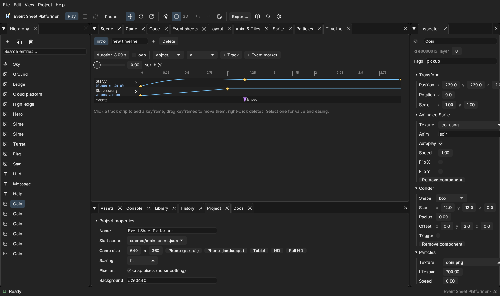

Preview, history and project tools
Phone preview#
Press Phone in the toolbar (or run nord serve --lan). A QR code appears; scan it with a phone on the same Wi-Fi and the game opens there. It reloads when you save — a changed event sheet is swapped in while the game keeps running and keeps your variables — and the phone's console shows up in the Console tab with a [phone] prefix. Only your game's files are shared (never the editor), every request needs the secret link, and it stops when you press Stop, close the project or quit.
Debugger and profiler#
See the chapter Debugger and profiler (?debug, F9).
Version history#
Bottom tabs → History Nord takes snapshots of your project's source files (scenes, event sheets, scripts, text) — automatically before the first save in any ten minutes, and whenever you press Snapshot now. Pick a snapshot to see which files changed and a line-by-line diff; Restore (it asks twice) brings the files back and first takes a safety snapshot, so you can undo the restore too. Images and audio are not copied.
Project tab#

Project properties: name, start scene, game size (with phone/tablet presets), scaling, pixel art, background, physics, orientation, icon and version. Find all references lists every place a name appears. Safe rename changes an object's name in scenes, prefabs and event sheets (even inside expressions like Slime.X), or moves an asset and fixes every reference to it — always with a preview, and always after taking a history snapshot.
Export as an installable web app#
In Export… tick Installable offline web app (or nord build --pwa): the build gets a manifest and a service worker, so players can add it to their home screen and play offline. Event sheets are compiled to JavaScript in the build (--no-compile-events turns that off).